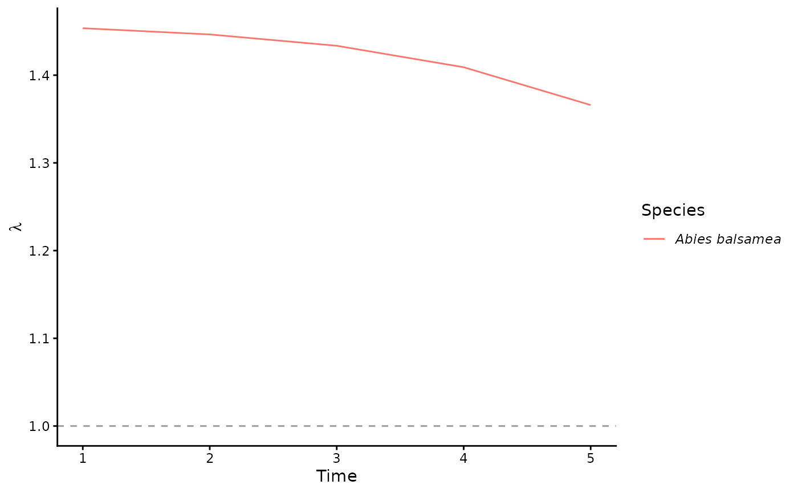
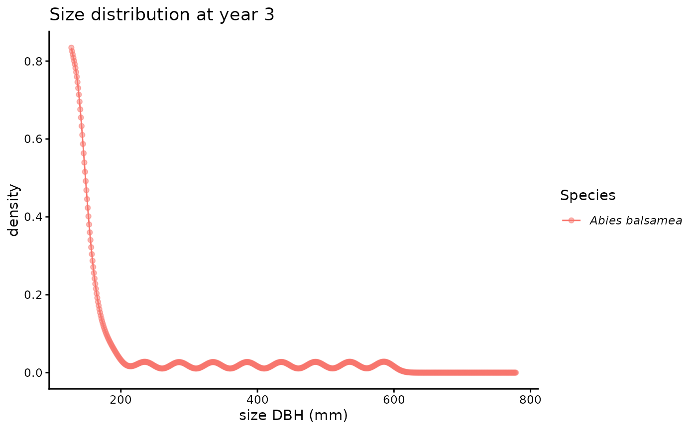

Plot an ipm_projection object
Usage
# S3 method for class 'ipm_projection'
plot(x, type = NULL, timestep = NULL, ...)Arguments
- x
An
ipm_projectionobject returned byproject.- type
Character or NULL. One of
"lambda","pop_size","size_dist","lambda_vs_n". If NULL (default), all four figures are rendered in sequence.- timestep
Integer or NULL. Only used when
type = "size_dist". The stored timestep (year) to plot. If NULL (default), the last stored timestep is used. Must be one of the values inx$years.- ...
Additional arguments (currently unused).
Examples
df <- data.frame(size_mm = seq(130, 600, by = 50),
species_id = "ABIBAL", plot_size = 400)
s <- stand(df)
mod <- species_model(s)
pars <- parameters(mod, draw = "mean")
env <- env_condition(MAT = 8, MAP = 1200)
ctrl <- control(years = 5, compute_lambda = TRUE, progress = FALSE)
proj <- project(mod, pars, s, env, ctrl)
plot(proj, type = "lambda")

plot(proj, type = "size_dist", timestep = 3)
